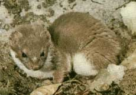
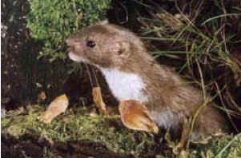

DONNOLA (COMMON WEASEL)

| Climate/Terrain | Colline, montagne, pianure e foreste temperate |
| Frequency | Uncommon |
| Organization | Solitary |
| Activity Cycle | Any |
| Diet | Carnivoro |
| Intelligence | Semi (2 - 4) |
| Treasure | Nessuno |
| Alignment | Neutral |
| No. Appearing | 1 |
| Armor Class | 5 |
| Movement | 12, Sw. 9, Cl. 6 |
| Hit Dice | 1/2 |
| Thac0 | 20 |
| No. of Attacks | 1 Morso |
| Damage / Attacks | 1d2 |
| Special Attacks | Nessuna |
| Special Defenses | Nessuna |
| Magic Resistance | Nessuna |
| Size | Tiny |
| Morale | Elite (13) |
| XP value | 10 |
Descrizione
La donnola presenta corpo allungato, arti corti e orecchie tonde. Il maschio ha una dimensione variabile tra i 15 e i 19 cm (la femmina è leggermente più piccola), la coda in entrambi i sessi è 3-5 cm, il peso può arrivare ai 100 g.
Combat
E' un animale coraggiosissimo e non sono rari i casi in cui aggredisce l'uomo, staccandosi da lui solo dopo una lotta molto prolungata. A volte addenta le gambe dei cavalli che passano accanto al suo rifugio.
La donnola è molto agile sia nel correre che nell'arrampicarsi e nel nuotare. Ottiene infatti la possibilità di scalare pareti pari al 75%. La sua agilità gli dona una buona classe armatura (ogni tiro su AC 6+ si considera completamente mancato).
Habitat/Society
Le sue piccole dimensioni le consentono un’ampia specializzazione alimentare. Le sue prede sono varie ad esempio arvicole, lepri, topi e conigli selvatici, uccelli, lucertole, insetti, vermi e carogne.
Ecology
La donnola è il più piccolo Carnivoro esistente. Un'esemplare catturato da giovane può essere facilmente ammaestrato (+1 al check di Animal Training).
